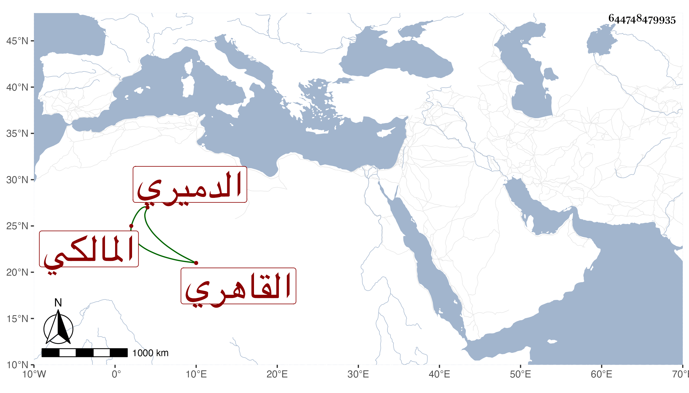

0902Sakhawi.DawLamic.ITO20230111-ara1.EIS1600.644748479935
Biography ID: 644748479935
68
محمد بن محمد بن أحمد بن عبد الملك الزين بن الشمس بن التاج الدميري ثم القاهري المالكي والد البدر محمد الآتي . ذكره شيخنا في إنبائه مقتصرا على اسمه واسم أبيه وقال كان حسن الصورة له قبول تام عند الناس لكثرة حشمته وقد ولي الحسبة مرارا وبيده التحدت في البيمارستان نيابة عن الأتابك علي قاعدة أبيه . مات في ثالث شعبان سنة ثلاث وثلاثين وقد جاز الخمسين . قلت ودفن بالتربة المنسوبة لهم خلف الصوفية الكبرى وكانت ولايته الحسبة في سنة ثلاث عشرة بعد محمد بن محمد بن محمد بن النعمان الهوى .
